1080B40 catalytic pre-converter - r r
- Path
- Procedures > 10 ENGINE > 1080 EXHAUST EMISSION CONTROL SYSTEM > 1080B exhaust emission control system > 1080B40 catalytic pre-converter - r r
- Kind
- repair procedure (removal / refitting; the operation number is the code)
- Applies to
- engines: 1.6 TS , 1.8 TS, 1.9 JTD 8v , 1.9 JTD 16v, 2.4 JTD 20v; all production periods
- Interactive page
- https://sloeber94.github.io/elrnDB-a156/en/#/3237706
Applies to: engines: 1.6 TS , 1.8 TS; all production periods; only with equipment: Euro 3
 Removing
Removing
 Refitting
RefittingPosition the vehicle on the ramp.
Ensure that the ignition key is in the OFF postition, then disconnect the battery negative terminal.
 | Name | Connector |
|---|---|---|
- | Battery |
1. Disconnect the electrical connection for the left Lambda sensor.
| Name | Connector |
|---|---|---|
1 | Lambda sensor |
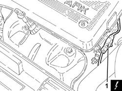
Applies to: engines: 1.6 TS , 1.8 TS; all production periods; only with equipment: Euro 3
Proceed with removal 1072C44 exhaust manifold heat shield on bulkhead - r+r .
Proceed with the removal 7055B54 under-engine guard - r r .
1. Undo the nuts securing the catalytic preconverter to the exhaust manifold.
2. Undo the bolt (2a) and the nuts (2b) securing the catalytic preconverter to the exhaust manifold.
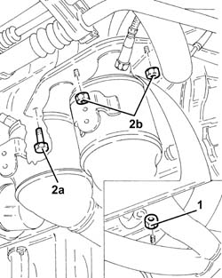
Applies to: engines: 1.6 TS , 1.8 TS; all production periods; only with equipment: Euro 3
1. Unscrew the nuts securing the catalytic preconverter to the catalytic converter
2. Release the catalytic preconverter (2a) from the flexible mount (2b).
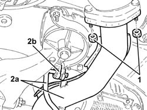
Applies to: engines: 1.6 TS , 1.8 TS; all production periods; only with equipment: Euro 3
1. Undo the bolt fixing the catalytic pre-converter to the mounting bracket on the crankcase.
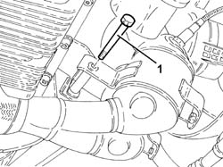
Applies to: engines: 1.6 TS , 1.8 TS; all production periods; only with equipment: Euro 3
1. Remove the catalytic preconverter (1a) complete with lambda sensors (1b).
Remove the gaskets.
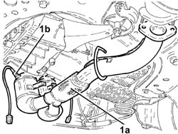
Applies to: engines: 1.6 TS , 1.8 TS; all production periods; only with equipment: Euro 3
Refitting
RemovingPlace the catalytic preconverter complete with Lambda sensors and gaskets back in its housing.
Tighten the bolt fixing the catalytic pre-converter to the mounting bracket on the crankcase.
Secure the catalytic preconverter to the flexible mounting.
Tighten the nuts fixing the catalytic pre-converter to the catalytic converter to the recommended torque.
 | Fastening | Component | Ø | Value (daNm) |
|---|---|---|---|---|
- | Nut | CATALYTIC PRE-CONVERTER | M8 | (Catalytic converter side) 2.3 ÷ 2.8 |
Tighten the nuts fixing the catalytic pre-converter to the exhaust manifold to the recommended torque.
| Fastening | Component | Ø | Value (daNm) |
|---|---|---|---|---|
- | Bolt | CATALYTIC PRE-CONVERTER | M8 | (Exhaust manifold side) 2.5 ÷ 3.1 |
| Fastening | Component | Ø | Value (daNm) |
|---|---|---|---|---|
- | Nut | CATALYTIC PRE-CONVERTER | M8 | (Exhaust manifold side) 2.5 ÷ 3.1 |
Connect the electrical connection for the left Lambda sensor.
Proceed with the refitting 7055B54 under-engine guard - r r .
Proceed with the refitting 1072C44 exhaust manifold heat shield on bulkhead - r+r .
Connect the battery terminal (-).
Remove the car from the ramp.
Applies to: engines: 1.9 JTD 8v ; production: da 04/98 a 02/99; only with equipment: 115 CV
Removing
RefittingPosition the vehicle on the ramp.
Proceed with the removal 1016A10 sound-proofing cover - r + r .
Proceed with the removal 1072C44 exhaust manifold heat shield on bulkhead - r+r .
1. Loosen the collar fixing the catalytic preconverter to the turbocharger.
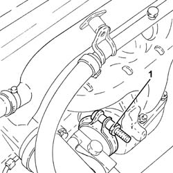
Applies to: engines: 1.9 JTD 8v ; production: da 04/98 a 02/99; only with equipment: 115 CV
Proceed with the removal 7055B54 under-engine guard - r r .
1. Undo the bolts fixing the rigid exhaust pipe support to the catalytic preconverter.
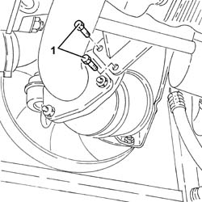
Applies to: engines: 1.9 JTD 8v ; production: da 04/98 a 02/99; only with equipment: 115 CV
1. Undo the bolt (1a) and the nut (1b) fixing the rigid exhaust pipe support to the crankcase sump.
2. Remove the rigid exhaust pipe support.
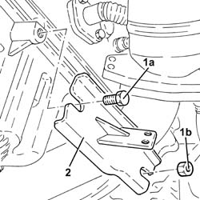
Applies to: engines: 1.9 JTD 8v ; production: da 04/98 a 02/99; only with equipment: 115 CV
1. Undo the nuts fixing the catalytic preconverter to the front section of the exhaust pipe.
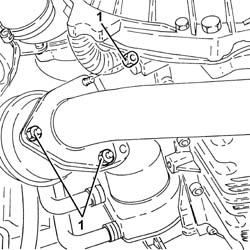
Applies to: engines: 1.9 JTD 8v ; production: da 04/98 a 02/99; only with equipment: 115 CV
1. Undo the bolts fixing the exhaust pipe attachment to the engine to the catalytic converter.
2. Remove the exhaust pipe attachment to the engine (2a) complete with gaskets (2b).
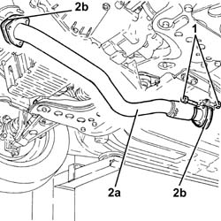
Applies to: engines: 1.9 JTD 8v ; production: da 04/98 a 02/99; only with equipment: 115 CV
1. Remove the catalytic preconverter.
2. Remove the gasket between the catalytic preconverter and the front section of the exhaust pipe.
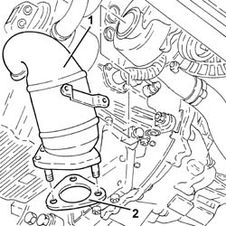
Applies to: engines: 1.9 JTD 8v ; production: da 04/98 a 02/99; only with equipment: 115 CV
Refitting
RemovingPlace the catalytic preconverter, complete with gasket, back in its housing.
1. Tighten the nuts fixing the catalytic preconverter to the front section of the exhaust pipe to the recommended torque.
| Fastening | Component | Ø | Value (daNm) |
|---|---|---|---|---|
1 | - | - | - | - |
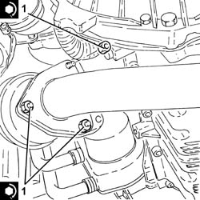
Applies to: engines: 1.9 JTD 8v ; production: da 04/98 a 02/99; only with equipment: 115 CV
1. Place the exhaust pipe attachment to the engine (1a), complete with gaskets (1b), back in its housing.
2. Tighten the bolts fixing the exhaust pipe attachment to the engine to the catalytic converter to the recommended torque.
| Fastening | Component | Ø | Value (daNm) |
|---|---|---|---|---|
2 | Bolt | EXHAUST PIPE TO ENGINE | M8 | (Catalytic converter side) 2.9 ÷ 3.5 |
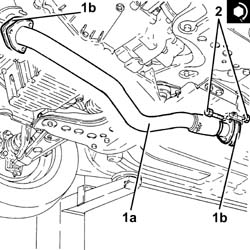
Applies to: engines: 1.9 JTD 8v ; production: da 04/98 a 02/99; only with equipment: 115 CV
Place the rigid support for the exhaust pipe back in its housing.
Tighten the bolt and the nut fixing the rigid support for the exhaust pipe to the crankcase sump.
Tighten the bolts fixing the rigid support for the exhaust pipe to the catalytic preconverter.
Tighten the collar fixing the catalytic preconverter to the turbocharger.
Proceed with the refitting 7055B54 under-engine guard - r r .
Proceed with the refitting 1072C44 exhaust manifold heat shield on bulkhead - r+r .
Proceed with the refitting 1016A10 sound-proofing cover - r + r .
Remove the car from the ramp.
Applies to: engines: 1.9 JTD 16v; all production periods
Removing
RefittingPosition the vehicle on the ramp.
Proceed with removal 7055B54 under-engine guard - r r .
1. Undo the bolts (1a) and remove the exhaust manifold heat shield (1b).
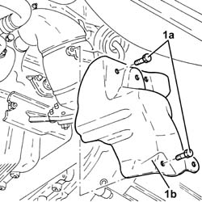
Applies to: engines: 1.9 JTD 16v; all production periods
1. Undo the nuts fixing the front section of the exhaust pipe to the catalytic pre-converter.
2. Undo the nuts fixing the front section of the exhaust pipe to the catalytic converter.
3. Remove the front exhaust pipe section complete with seals.
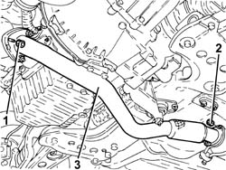
Applies to: engines: 1.9 JTD 16v; all production periods
1. Undo the bolts (1a) and the nuts (1b) fixing the catalytic preconverter mounting bracket.
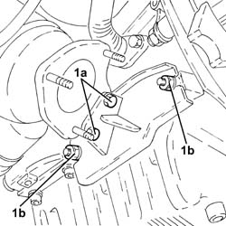
Applies to: engines: 1.9 JTD 16v; all production periods
1. Loosen the collar (1a) and remove the catalytic preconverter (1b).
2. Keep the catalytic preconverter mounting bracket.
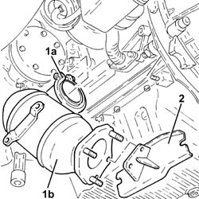
Applies to: engines: 1.9 JTD 16v; all production periods
Refitting
RemovingPlace the catalytic preconverter complete with mounting back in its housing and fasten it to the turbocharger using the collar.
Tighten the bolts and the nuts fixing the catalytic preconverter mounting bracket.
1. Place the front section of the exhaust pipe with gaskets back in its housing.
2. Tighten the nuts securing the exhaust pipe front section to the catalytic converter to the specified torque.
| Fastening | Component | Ø | Value (daNm) |
|---|---|---|---|---|
2 | Nut | PRE-CAT CONVERTOR/CAT CONVERTOR PIPE | M8 | (Catalytic converter side) 2.3 ÷ 2.8 |
3. Tighten the nuts fixing the front section of the exhaust pipe to the catalytic preconverter to the recommended torque.
| Fastening | Component | Ø | Value (daNm) |
|---|---|---|---|---|
3 | Nut | PRE-CAT CONVERTOR/CAT CONVERTOR PIPE | M8 | (Catalyitic preconverter side) 2.3 ÷ 2.8 |
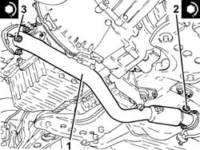
Applies to: engines: 1.9 JTD 16v; all production periods
Place the lower exhaust manifold heat shield back in its housing and fix it using the bolts.
Proceed with refitting 7055B54 under-engine guard - r r .
Remove the car from the ramps.
Applies to: engines: 2.4 JTD 20v; all production periods
Removing
RefittingPosition the vehicle on the ramp.
Proceed with removal 7055B54 under-engine guard - r r .
Proceed with removal 1076A46 heat shield for catalytic preconverter r r .
Proceed with removal 1076B70 exhaust pipe between pre-catalytic converter and catalytic converter - r r .
1. Loosen the collar (1a) and remove the catalytic preconverter (1b).
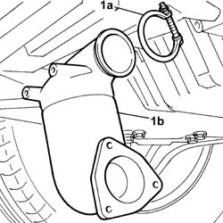
Applies to: engines: 2.4 JTD 20v; all production periods
Refitting
RemovingPlace the catalytic preconverter complete with mounting back in its housing and fasten it to the turbocharger using the collar.
Proceed with refitting 1076B70 exhaust pipe between pre-catalytic converter and catalytic converter - r r .
Proceed with refitting 1076A46 heat shield for catalytic preconverter r r .
Proceed with refitting 7055B54 under-engine guard - r r .
Remove the car from the ramps.
Topics linked from this page (7)
- 1016A10 sound-proofing cover - r + r
- 1072C44 exhaust manifold heat shield on bulkhead - r+r
- 1076A46 heat shield for catalytic preconverter r r
- 1076B70 exhaust pipe between pre-catalytic converter and catalytic converter - r r
- 7055B54 under-engine guard - r r
- A1B Battery ( BATTERY NEGATIVE )
- K39 Lambda sensor
Topics that link to this page (12)
- 1008A44 rear rigid mount - r r
- 1008B20 power unit intermediate mount flexible block - replace
- 1016C10 cylinder head - r + r and replace gasket
- 1020D11 front crankshaft oil seal cover-r r and replace seal with timing belt removed-includes cleaning mating surfaces and applying sealant
- 1028H10 connecting rod and piston set - r r
- 1064A22 Variable geometry TURBOCHARGER - R.R.
- 1064A24 variable geometry turbocharger exhaust manifold assembly sleeveleading to exhaust pipe r r
- 1072C10 exhaust manifold - r + r and replace seal
- 1084B34 cartridge engine oil filter support - r + r
- 1084C37 Engine oil supply PIPE to cooling radiator -R.R.
- 1084C38 engine oil delivery and return pipes to cooling radiator - r + r
- 1084C39 Engine oil return PIPE from cooling radiator - R.R.